Human Functioning
Optimalisasi kapasitas psikologis agar manusia dapat berfungsi secara utuh.
Ruang layanan psikologi, asesmen, konsultasi, pelatihan, dan pengembangan manusia untuk individu, kelompok, serta organisasi.
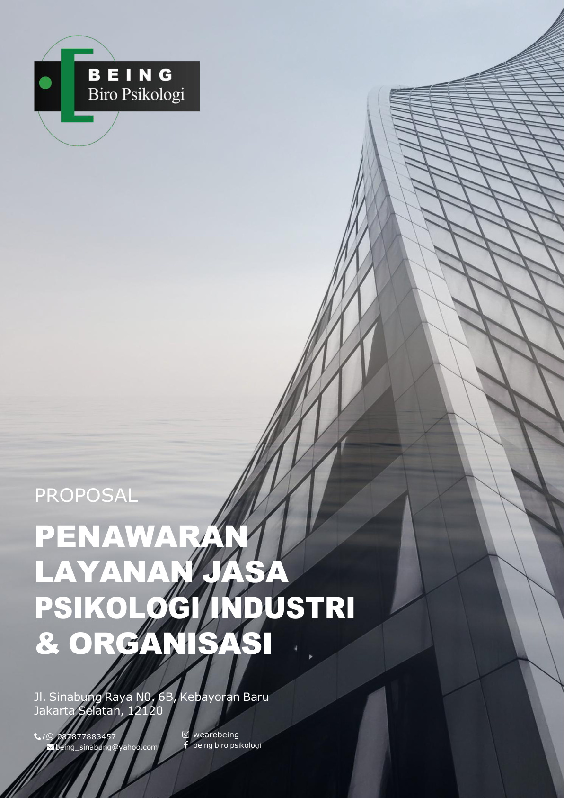
BEING didirikan atas keyakinan bahwa setiap manusia unik dan memiliki kemampuan berbeda dalam menerima, mempersepsi, serta merespons perubahan di lingkungannya.
Kematangan psikologis tercermin dari kemampuan memanfaatkan fungsi kognisi, regulasi emosi dan dorongan, keterlibatan sosial, serta kematangan spiritual secara optimal. Karena itu, layanan BEING diarahkan untuk membantu individu dan kelompok meningkatkan kualitas kehidupannya.
Dalam pelaksanaannya, BEING menggunakan tata laksana terstandar serta metode dan alat ukur yang dapat dipertanggungjawabkan secara etis, ilmiah, dan profesional.
Optimalisasi kapasitas psikologis agar manusia dapat berfungsi secara utuh.
Pencegahan, intervensi, dan pemberdayaan potensi yang bebas dari masalah narkoba.
Metode, asesmen, dan layanan berdasarkan etika, ilmu, serta kompetensi profesional.
Layanan diberikan secara individual maupun kelompok, dengan mengutamakan ketepatan, kecepatan, efektivitas, dan efisiensi.
Pemetaan potensi, kapasitas kognitif, emosi, sikap kerja, serta kebutuhan pengembangan.
Pendampingan psikologis secara individual maupun kelompok sesuai kebutuhan klien.
Identifikasi kandidat yang sesuai dengan job description, job specification, dan kompetensi jabatan.
Pengembangan leadership, teamwork, personality, serta keterampilan kerja melalui metode aktif.
Job analysis, job specification, performance analysis, dan penilaian kepuasan pelanggan.
Edukasi, screening, assessment, intervensi, rehabilitasi, dan pemberdayaan potensi.
Tim BEING hadir dengan latar belakang psikologi, kesehatan, adiksi, dan human development. Setiap profil ditampilkan dalam pola yang konsisten agar struktur tim lebih jelas dan profesional.
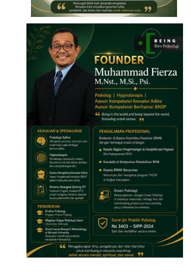
Psikolog, konselor, trainer, asesor kompetensi, dan pengembang program Human Development.
Lihat profil →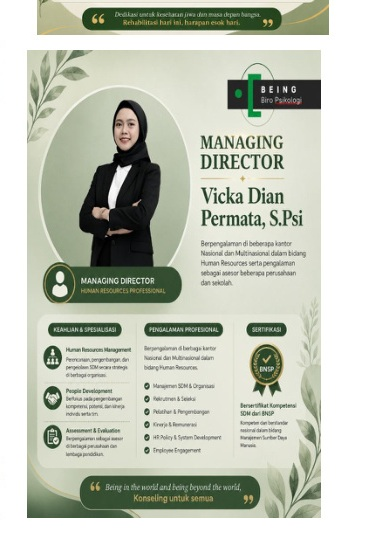
Profesional Human Resources yang berpengalaman dalam pengembangan layanan dan program strategis.
Lihat profil →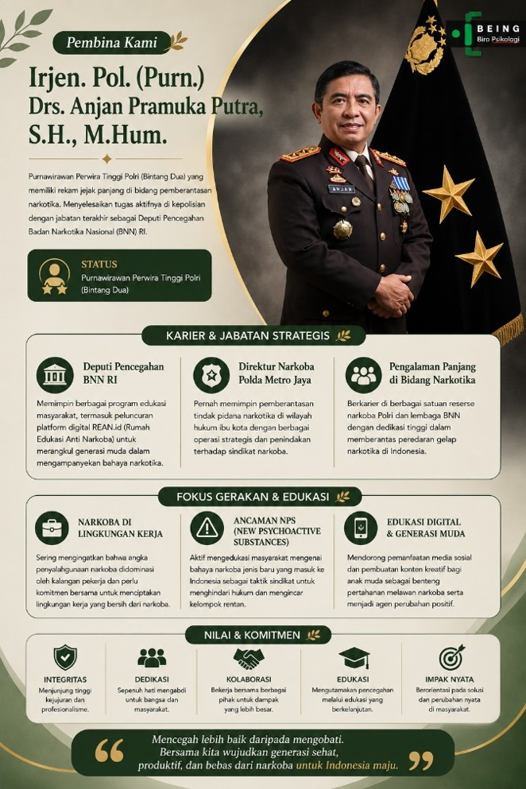
Purnawirawan Perwira Tinggi Polri dengan pengalaman strategis pada bidang pencegahan dan pemberantasan narkotika serta edukasi masyarakat.
Lihat profil lengkap →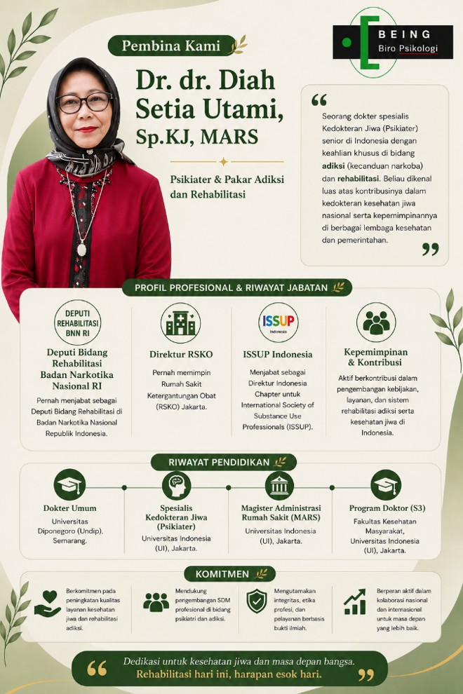
Psikiater dan pakar adiksi serta rehabilitasi dengan pengalaman kepemimpinan, pengembangan kebijakan, dan layanan kesehatan jiwa.
Lihat profil lengkap →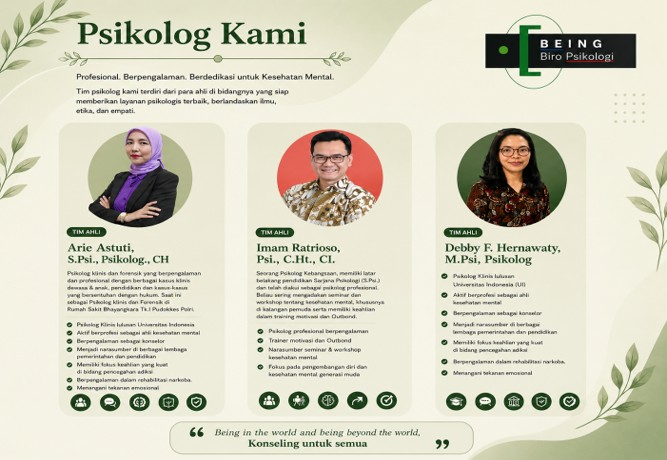
Profesional psikologi dengan pengalaman pada asesmen, konseling, pengembangan, dan layanan psikologis.
Lihat profil lengkap →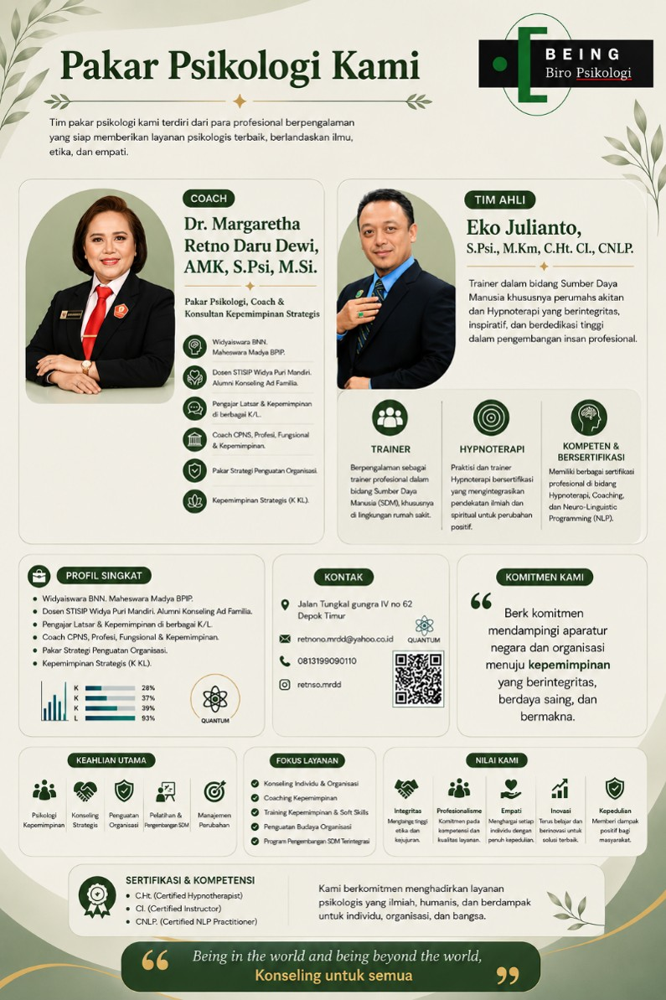
Tenaga profesional psikologi yang mendukung layanan individu, kelompok, organisasi, serta pengembangan manusia.
Lihat profil lengkap →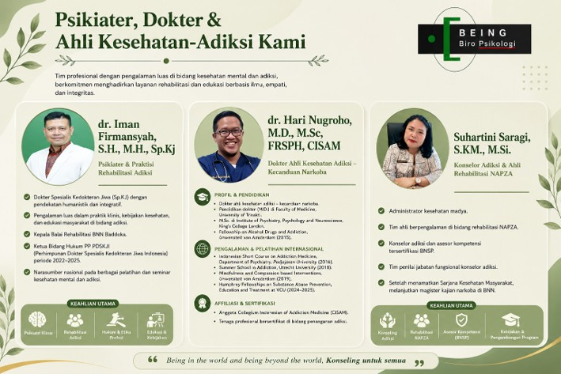
Psikiater, dokter, dan ahli kesehatan yang mendukung kebutuhan kesehatan mental, adiksi, rehabilitasi, dan edukasi.
Lihat profil lengkap →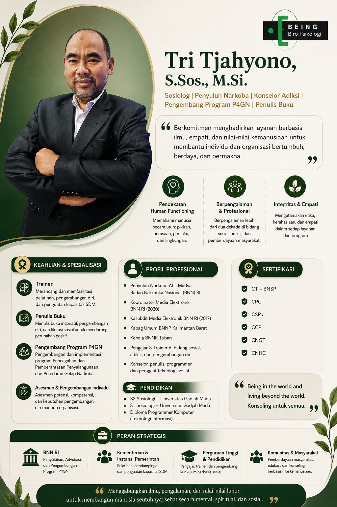
Sosiolog, konselor adiksi, trainer, penulis, dan pengembang program human development.
Lihat profil lengkap →Pengalaman BEING mencakup layanan kepada organisasi dari berbagai sektor. Logo ditampilkan secara proporsional agar identitas setiap klien tetap terjaga.
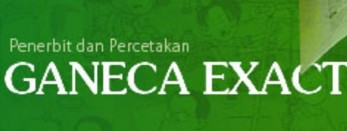
Ganeca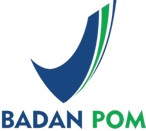
BPOM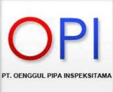
OPI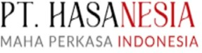
HasanesaIkuti jajak pendapat, evaluasi layanan, dan survei kebutuhan yang dikelola langsung melalui sistem BEING.
Jl. Sinabung Raya No. 6B, Kebayoran Baru, Jakarta Selatan 12120